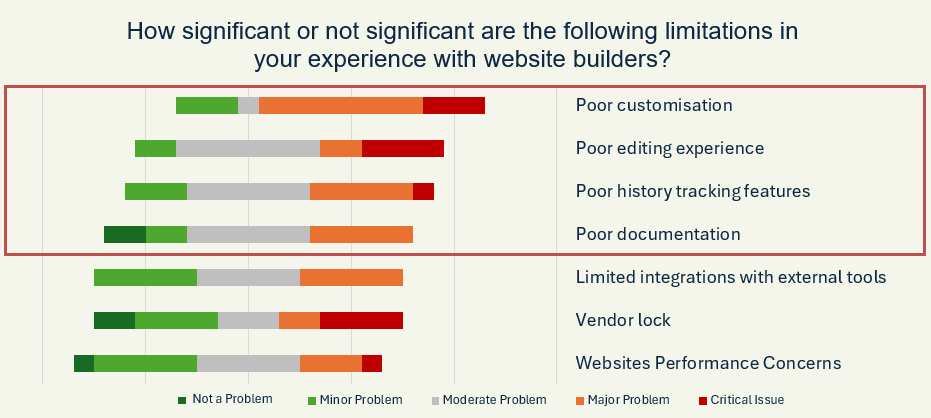
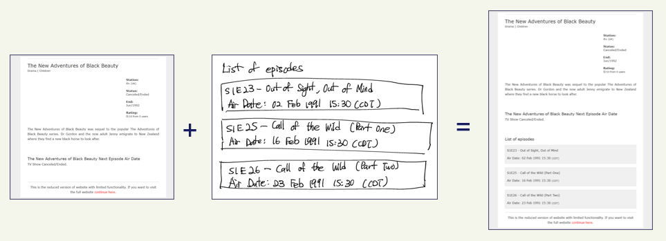
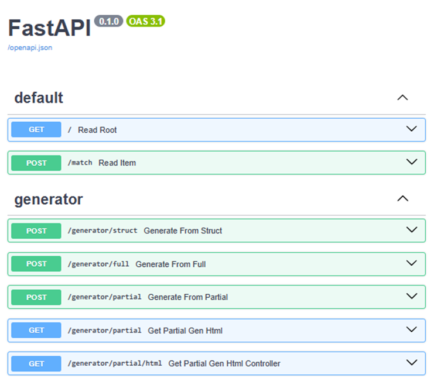

The rise of website builders has simplified online presence
creation for individuals and businesses. However, existing
platforms face limitations which hinder broader adoption. This
study investigates the current landscape of website builders
through case studies and user surveys, uncovering common
limitations such as customisability, inaccurate documentation
and lack of versioning tools. The study further explores
innovative opportunities to tackle them from these insights,
such as a Large Language Model (LLM) powered frontend UI
generation functionality, a Plugins-of-Plugins system, an HTML
importation system, and an automated documentation generation
feature. This study then successfully proves these features'
technical feasibility through experiments and implementation by
building a proof-of-concept website builder. Additionally,
through experiments, it is found that passing the partial design
or sketch is a valid approach to make minor modifications to the
current HTML codebase, and commercial models outperform
open-source models in this task.
Part of the work
presented in this thesis has also been accepted at AI4X 2025
(Poster Track), recognising its relevance in website builders
and frontend UI generation.
We found lack of customisability, inaccurate documentation, and poor versioning tools to be the most common limitations in website builders. These findings remain consistent across case studies and user surveys.
During our case study, we saw a pattern where the business owner modified the design of some small components from the layout the external contractors designed. We argue that partial frontend UI generation is valuable, especially for non-technical people, such as SME owners or product managers, to make minor changes without having to worry about the underlying code. This helps with customisability in website builders.
By extending GrapesJS, an open-source website builder, we create a website builder that allows users to generate frontend UIs from full or partial designs and sketches easily.
By using FastAPI, we have automatically generated OpenAPI documentation that can be accessed through the route “/docs” in the server. This generation is possible as FastAPI is based on the OpenAPI specification.
@misc{10356_184126,
author = {Boon Hian Lim},
title = {Beyond code: a comprehensive study on website builders, their limitations, and opportunities for innovation},
year = {2025},
}